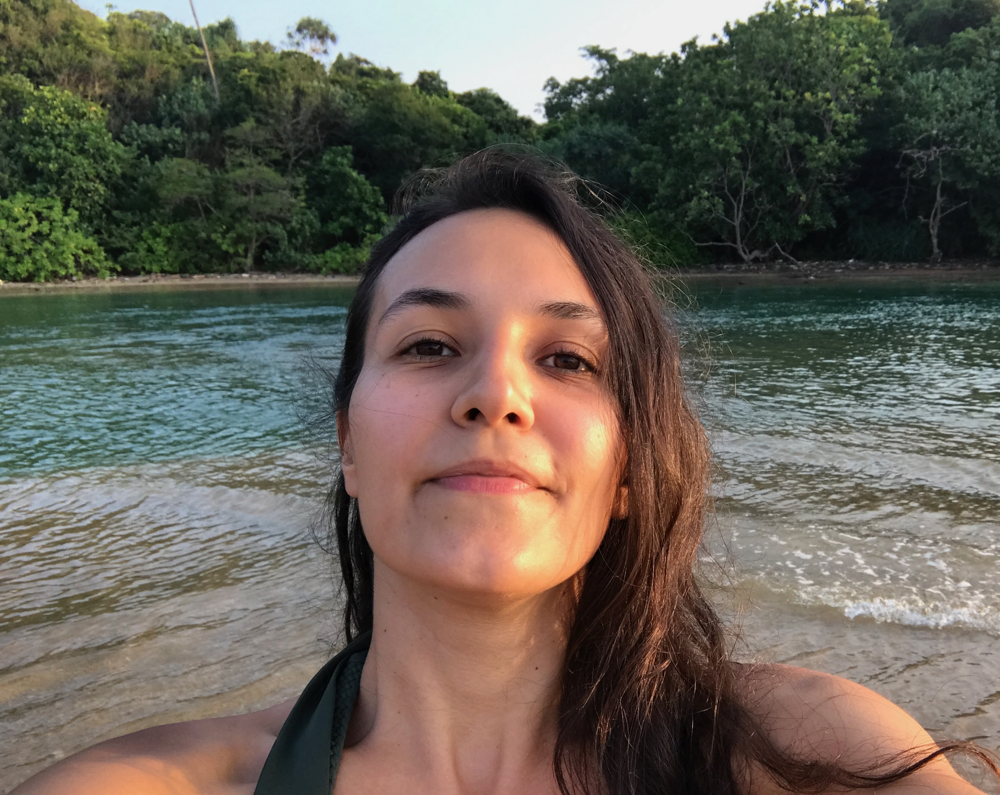

Detecting strategy drift in multi-agent systems (Ongoing)
Using topological data analysis, particularly persistent homology, to investigate whether changes in agent behaviour can provide early warning of undesirable strategy drift.
Zurich, Switzerland
Artificial Intelligence · Statistics · Software Engineering · Quality Engineering · Management & Leadership
I love where research meets real systems, bringing together theoretical thinking, practical engineering, transparent evaluation, and leadership.

I have spent more than 15 years working across software engineering, quality assurance, engineering management, and technical leadership. I have worked with international companies and distributed teams spanning Australia, Europe, and beyond, across fields including cybersecurity, blockchain, and healthcare.
After many years in industry, I returned to academia to pursue an MSc in Artificial Intelligence at the University of Zurich. Today, I'm excited to bring these perspectives together to build AI systems that prove themselves in the real world.
I don't fit neatly into one professional box, and I see that as one of my greatest strengths.
As a manager and leader, my passion has always been to cultivate collective intelligence - helping people bring out the best in one another, achieve more together, and grow both individually and collectively. This led to my interest in human behaviour and modern psychology, as people are often the most important and complex element in building sophisticated systems.
Today, my interests centre on how AI systems reason, develop strategies and collaborate, and how theory and interpretability can help us understand and improve these processes. I'm excited to witness and help shape new forms of collective intelligence emerging through collaboration between humans and AI agents.
Using topological data analysis, particularly persistent homology, to investigate whether changes in agent behaviour can provide early warning of undesirable strategy drift.
A Master’s project with UZH and University Hospital Zurich (USZ), developing an end-to-end pipeline for synthetic CT generation from paired MRI - CT data, including automated preprocessing, conditional diffusion model training and inference optimisation.
An experimental study of whether metric space magnitude can increase diversity in trajectory aware memory selection while preserving relevance. On the available benchmarks, the approach did not consistently outperform relevance-only selection or MMR.
An agentic medical imaging framework that interprets the provided medical images, autonomously selects and coordinates suitable AI models and analytical tools, validates their outputs, and produces traceable findings, measurements and recommendations for human review.
My industry experience spans software engineering, quality architecture, technical consulting, engineering management and technical leadership. I have built and supported production systems, designed reusable automation and evaluation infrastructure, improved observability across distributed cloud platforms, and led international teams delivering products across fintech, cybersecurity, blockchain and healthcare.
View my full CV